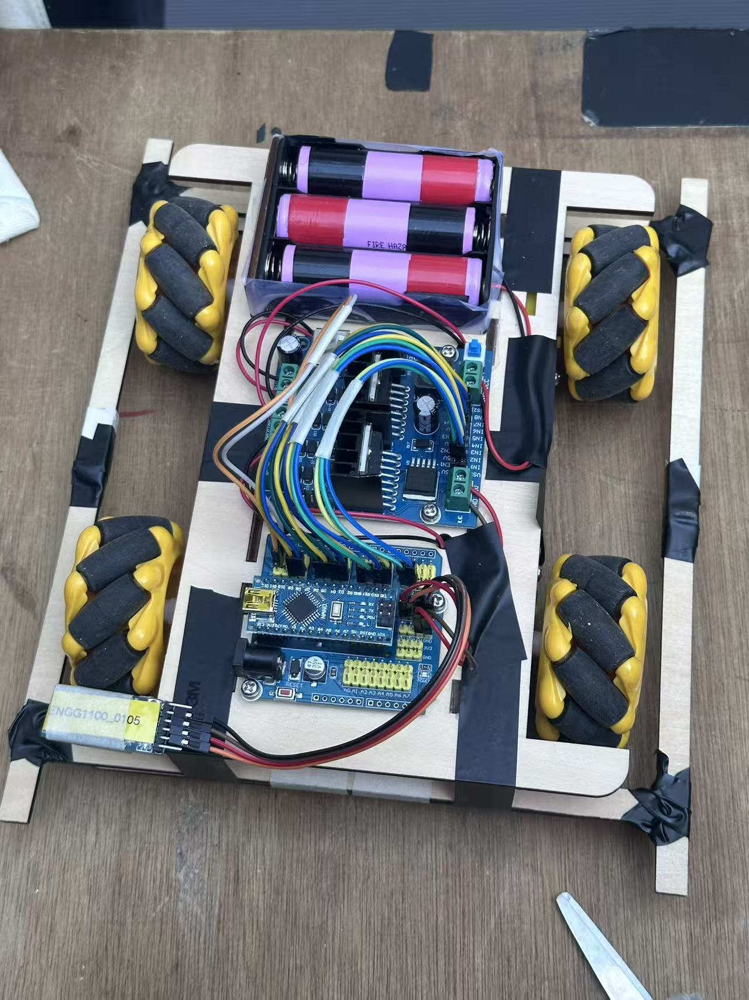
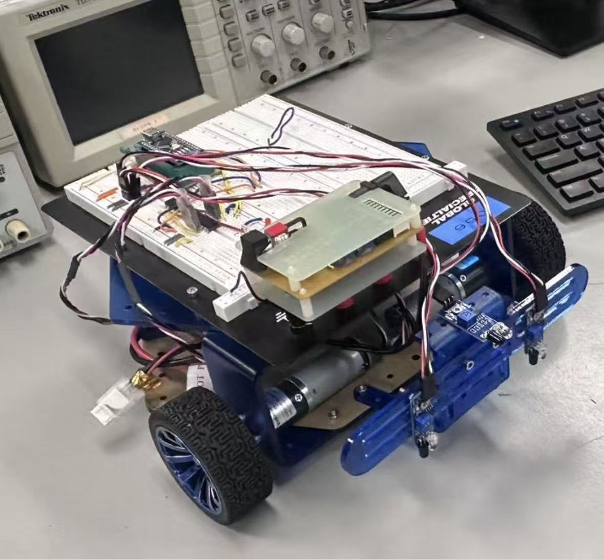

BEng Computer Engineering (Extended major in AI), HKUST | Year 2
Email: danicaw0826@gmail.com
Interested in AI, robotics, software and cybersecurity.
Seeking internship opportunities to apply engineering and AI expertise.
Bluetooth Smart Car – 3rd Place Overall
Designed components in Fusion 360, fabricated via laser cutting, assembled circuits, and developed the control app using MIT App Inventor with Arduino motor logic.
Line-Following Robot Car – Arduino + IR sensors
Constructed a line-tracking robot using infrared sensors, motor drivers, and Arduino.
Hamster Care Mini-Game – Team Leader & Software Lead
If you'd like to try it out, feel free to download the software here:
Note: Android only. Requires MIT App Inventor to install.
Download "Feeding Foggy" gameProgramming:C++, Python, Arduino
Hardware & Prototyping:Fusion 360, MIT App Inventor
Language:Mandarin, Cantonese, English